¿Quienes Somos?
Somos la asociacion Mastropieros que nunca o MQN, somos un grupo de fans de la iconica banda les luthier. Hicimos esta pagina especialmente para introducir a mas personas a la banda ya mencionada. Como pueden ver en la barra de navegacion se pueden encontrar con: los integrantes de la banda, la historia de la banda, las funciones publicadas en el canal de les luthier y algunos de sus instrumentos que ellos mismos crearon. Si usted quiere no se olvide contactarnos con nosotros, por si quieres tener mas info de la banda.
Integrantes

Gerardo Masana (1967–1973)
-
Ernesto Acher (1971–1986)

Daniel Rabinovich (1967–2015)
-
Carlos Núñez Cortés(1969-2017)
-
Marcos Mundstock (1967–2020)

Carlos López Puccio(1967–actualidad)
-
Jorge Maronna(1967–actualidad)

>Horacio Turano (2015-actualidad)
-
Martín O'Connor (2015-actualidad)
Funciones
| funcion | fecha | ¿donde puedo ver la funcion? |
|---|---|---|
| Viejos fracasos | (1977) | |
| Mastropiero que nunca | (1979) |  |
| Les Luthiers hacen muchas gracias de nada | (1980) | |
| Humor dulce hogar | (1986) | 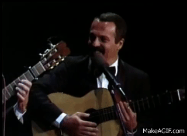 |
| Viegésimo aniversario | (1989) | 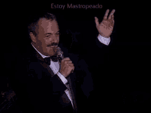 |
| Les Luthiers, grandes hitos | (1995) | 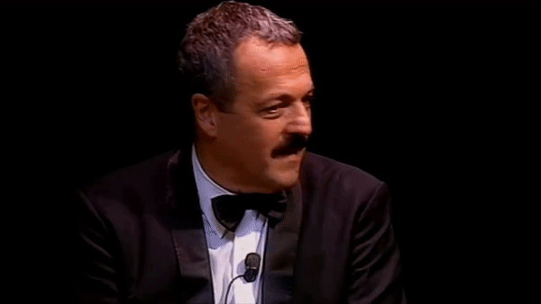 |
| Bromato de armonio | (1998) | 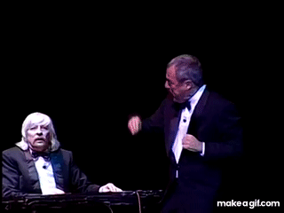 |
| Unen canto con humor | (1999) | 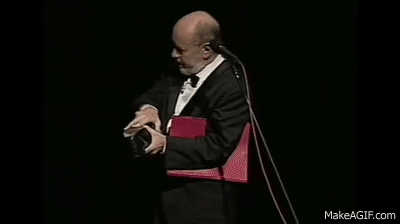 |
| Todo por que rías | (2000) | 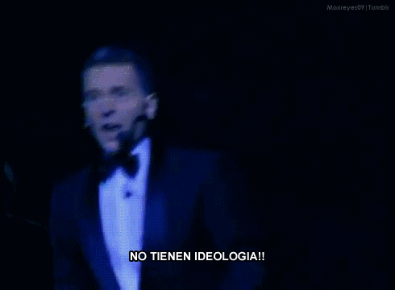 |
| El Grosso Concerto | (2001) |  |
| Las obras de ayer | (2002) | 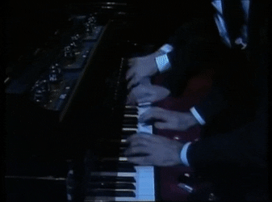 |
| ¡Aquí Les Luthiers! | (2005) | 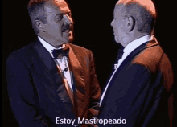 |
| Los Premios Mastropiero | (2006) | 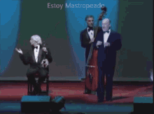 |
| Lutherapia | (2009) | 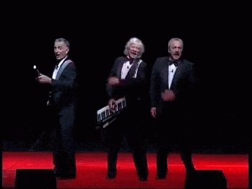 |
| ¡CHIST! | (2013) | 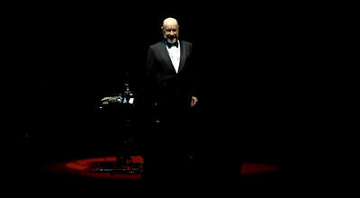 |
| Viejos hazmerreíres | (2016) |  |
Instrumentos

exoxisara
lirodoro
Alambique encantador
Bass-pipe a vara

Calephone da cassa
Marimba de cocos
Antenor